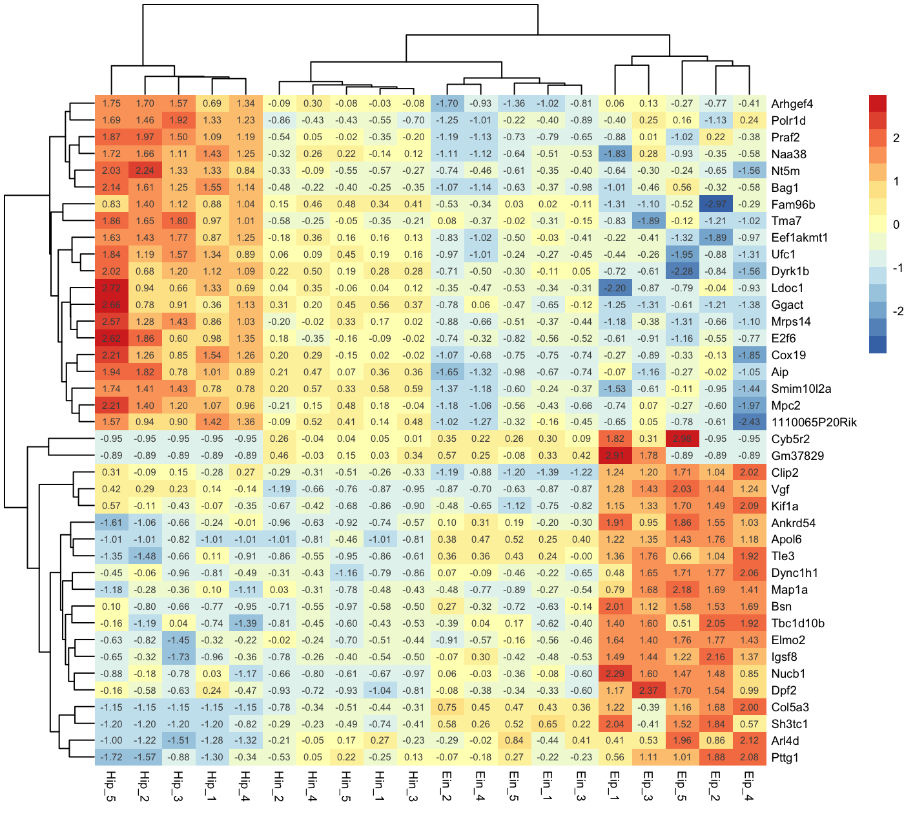

Within the tidyverse heatmaps can be generated via ggplot2::geom_tile() but is sometimes hard to reach the versatility and beauty of a genuine heatmap function like pheatmap::pheatmap(). tidyheatmaps provides a tidyverse-style interface to the powerful heatmap package pheatmap by @raivokolde and enables the generation of complex heatmaps from tidy data with minimal code.
Data requirements
tidy_heatmap() requires tidy data in long format, see tidyverse.
As an example we will use the gene expression data set data_exprs. In the tidyverse lingo the columns of a data frame are called variables. The variable expression contains the numeric values to be color-coded in the heatmap. Furthermore we will use the variables sample for heatmap columns and external_gene_name for heatmap rows.
glimpse(data_exprs) #> Rows: 800 #> Columns: 9 #> $ ensembl_gene_id <chr> "ENSMUSG00000033576", "ENSMUSG00000033576", "ENSMU… #> $ external_gene_name <chr> "Apol6", "Apol6", "Apol6", "Apol6", "Apol6", "Apol… #> $ sample <chr> "Hin_1", "Hin_2", "Hin_3", "Hin_4", "Hin_5", "Ein_… #> $ expression <dbl> 2.203755, 2.203755, 2.660558, 2.649534, 3.442740, … #> $ group <chr> "Hin", "Hin", "Hin", "Hin", "Hin", "Ein", "Ein", "… #> $ sample_type <chr> "input", "input", "input", "input", "input", "inpu… #> $ condition <chr> "healthy", "healthy", "healthy", "healthy", "healt… #> $ is_immune_gene <chr> "no", "no", "no", "no", "no", "no", "no", "no", "n… #> $ direction <chr> "up", "up", "up", "up", "up", "up", "up", "up", "u…
Basic usage
The basic layout of the heatmap relies on the parameters rows, columns and values. You can think of them like aesthetics in ggplot2::ggplot(), similar to something like aes(x = columns, y = rows, fill = values).
tidy_heatmap(data_exprs, rows = external_gene_name, columns = sample, values = expression )

Data scaling
With the parameter scale you can activate data scaling for "row" or "column". By default data scaling is turned off scale = "none".
tidy_heatmap(data_exprs, rows = external_gene_name, columns = sample, values = expression, scale = "row" )

Ordering
Rows and columns in the heatmap will appear in the same order as in the tidy data frame used as input. For example, to order rows and columns alphabetically, just use the dplyr::arrange().
data_exprs %>% arrange(external_gene_name, sample) %>% tidy_heatmap(rows = external_gene_name, columns = sample, values = expression, scale = "row" )

Color legend
You can customize the number of colors color_legend_n in the color legend. The default is 15.
tidy_heatmap(data_exprs, rows = external_gene_name, columns = sample, values = expression, scale = "row", color_legend_n = 5 )

You can also define the minimum and maximum values of the color legend. Values smaller then the color_legend_min will have the lowest color, values bigger than the color_legend_max will get the highest color.
tidy_heatmap(data_exprs, rows = external_gene_name, columns = sample, values = expression, scale = "row", color_legend_min = -1, color_legend_max = 1 )

Of course, you can also change the colors themselves. The number of colors you provide does not have to match color_legend_n. The color legend is automatically adjusted to have color_legend_n colors (the default is 15).
tidy_heatmap(data_exprs, rows = external_gene_name, columns = sample, values = expression, scale = "row", colors = c("#145afc","#ffffff","#ee4445") )

Annotations
Annotations can be added for both rows and columns via annotation_row and annotation_col, respectively. Just specify the corresponding variables in the tidy data frame. If you want more then one variable for annotation just combine them by c(var1, var2, var3).
tidy_heatmap(data_exprs, rows = external_gene_name, columns = sample, values = expression, scale = "row", annotation_col = c(sample_type, condition, group), annotation_row = c(is_immune_gene, direction) )

Customize annotations colors
You can provide a list of named vectors to take control over the annotations colors annotation_colors.
ann_colors <- list( condition = c(EAE = "#BD79B4", healthy = "#F5CEF2"), group = c(Ein = "#C14236", Eip = "#E28946", Hin = "#4978AB", Hip = "#98BB85"), sample_type = c(input = "#BDBDBD", IP = "#7D7D7D"), direction = c(down = "#5071DC", up = "#C34B6B"), is_immune_gene = c(yes = "#B69340", no = "#FFFFFF") ) tidy_heatmap(data_exprs, rows = external_gene_name, columns = sample, values = expression, scale = "row", annotation_col = c(sample_type, condition, group), annotation_row = c(is_immune_gene, direction), annotation_colors = ann_colors )

Gaps
Gaps can be added by specifying data frame variables that should be used to generate the gaps. Only one variable can be chosen for each gaps_row and gaps_col.
tidy_heatmap(data_exprs, rows = external_gene_name, columns = sample, values = expression, scale = "row", annotation_col = c(sample_type, condition, group), annotation_row = c(is_immune_gene, direction), annotation_colors = ann_colors, gaps_row = direction, gaps_col = group )

Cell dimensions
You can provide absolute cell dimensions (in points) via the cellwidth and cellheight parameters.
tidy_heatmap(data_exprs, rows = external_gene_name, columns = sample, values = expression, scale = "row", annotation_col = c(sample_type, condition, group), annotation_row = c(is_immune_gene, direction), annotation_colors = ann_colors, gaps_row = direction, gaps_col = group, cellwidth = 7, cellheight = 7 )

Write to file
You can use the parameter filename to write the heatmap to file.
tidy_heatmap(data_exprs, rows = external_gene_name, columns = sample, values = expression, filename = "my_heatmap.pdf" )
More features
pheatmap provides even more features like clustering, dendrograms, text within cells, et cetera. Additional available parameters can be found in the documentation of tidy_heatmap().
tidy_heatmap(data_exprs, rows = external_gene_name, columns = sample, values = expression, scale = "row", cluster_rows = TRUE, cluster_cols = TRUE, display_numbers = TRUE )
